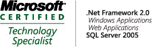
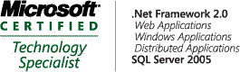

Call me unusual, but I like doing the MS Certification exams. First, some history.
 My first exam was way back in 1999, when I participated in the beta program for the (then) new Visual FoxPro exams, 70-155 (Designing and Implementing Distributed Applications with Microsoft® Visual FoxPro® 6.0) and 70-156 (Designing and Implementing Desktop Applications with Microsoft® Visual FoxPro® 6.0). These were awarded when the beta program for those exams finished on 09 Feb 2000. All of a sudden I was an MCP.
My first exam was way back in 1999, when I participated in the beta program for the (then) new Visual FoxPro exams, 70-155 (Designing and Implementing Distributed Applications with Microsoft® Visual FoxPro® 6.0) and 70-156 (Designing and Implementing Desktop Applications with Microsoft® Visual FoxPro® 6.0). These were awarded when the beta program for those exams finished on 09 Feb 2000. All of a sudden I was an MCP.
I was hooked. Soon afterwards I followed up with the compulsory 70-100 (Analyzing Requirements and Defining Solution Architectures) and the optional 70-029 (Designing and Implementing Databases with Microsoft® SQL Server 7.0) exams and by April 12 that year I was an MCSD (although not MCSD.NET - this was in the Win32 timeframe).
I haven't hyperlinked any of the exams above, because they've since been retired and are no longer listed on the MCP exam site. Some time passed after this as I hadn't moved to .NET (I was still working a lot with VFP), and there were no new exams that seemed relevant.
That changed in 2004 when I accepted this role at MS, and in August 2005 I passed my first .NET exam: 70-305 (Developing and Implementing Web Applications with Microsoft® Visual Basic® .NET and Microsoft® Visual Studio® .NET). I sat the exam at our internal technical conference, TechReady and I found that sitting exams at a conference made a lot of sense. It was time that was already out of band for me, I was half-way across the world, immersed in the technology and I wasn't likely to get distracted by the day-to-day events that seem to sap your time for doing "optional" things.
The next year (2006) at TechReady, I really went for it. I sat and passed 4 exams in a week (in chronological order) - 70-431 (TS: Microsoft® SQL Server™ 2005 - Implementation and Maintenance), the foundation 70-536 (TS: Microsoft® .NET Framework 2.0 - Application Development Foundation), 70-528 (TS: Microsoft® .NET Framework 2.0 - Web-based Client Development) and 70-526 (TS: Microsoft® .NET Framework 2.0 - Windows®-based Client Development). This gave me a new certification in the new generation of certifications. I was now a MCTS three times over (2 in .NET and one in SQL 2005).
This year I took the same approach. I sat and passed another 4 exams in a week: one TS; 70-529 (TS: Microsoft® .NET Framework 2.0 - Distributed Application Development) and three PRO; 70-547 (PRO: Designing and Developing Web-based Applications by Using the Microsoft® .NET Framework), 70-548 (PRO: Designing and Developing Windows®-based Applications by Using the Microsoft® .NET Framework) and 70-549 (PRO: Designing and Developing Enterprise Applications by Using the Microsoft® .NET Framework). This gave me an additional MCTS (.Net Framework 2.0: Distributed Applications) and also certified me as a MCPD three times over (Web Developer, Windows Developer and Enterprise Application Developer)
My impression of the certification program and the exams is very positive. Each time I study for and sit an exam I feel that I learn more and more about the breadth and capability of the product or technology I'm studying. Being forced to explore all of the parts means that I discover areas I may never have come across day-to-day, but that prove useful as I go about my job. It also helps me build an overall picture of (in this case) the framework and how its parts fit together. Finally, it gives me a tangible set of achievements to which I can point my manager (or a potential employer). Having passed these exams demonstrates a base level of knowledge and at least some interest in furthering my understanding of the tools I'm using. Note that I'm not saying that this is the only way to further one's understanding, indeed it's not the only way I use, but it is something that is easily demonstrated. I only need to point interested parties at the Transcript Sharing Page and tell them to use TranscriptID 735419 and Access Code AndrewCoates.
If you've got to the end of this rather long post and you want more information about Microsoft Certifications, there's the official site, but you can do a lot worse than to subscribe to Trika Harms zum Spreckel's entertaining blog (although, if you get a chance to meet Trika in person as I just have at TechEd, you won't be at all surprised that her blog is so entertaining). Local MVP and certification junkie Rob Farley also often posts great information.